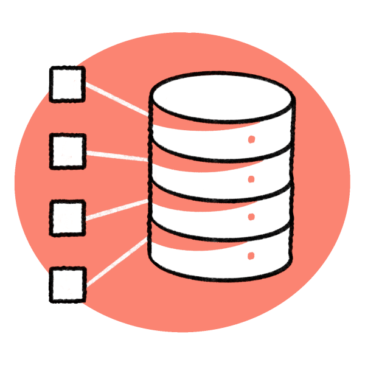
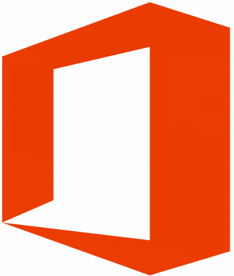
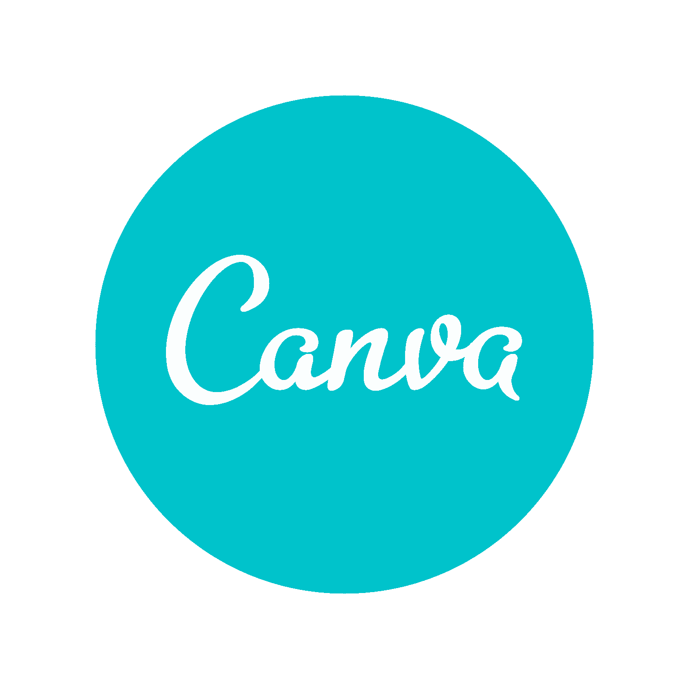

I'm a studant of
INFORMATION SYSTEMS
IT Governance Intern
Hi! My name is Cauã Matteus.
Great pleasure! My name is Cauã Matteus Vieira Pereira. I'm Brazilian, born in Belo Horizonte, Minas Gerais, on December 10th of 2003, 20 years old.
I'm in the 4º period of the bachelor's degree in Information Systems. I don't hesitate to embrace the opportunities that college provides me. I aim to become a reference in my area.
IT Governance Intern
September/2023 - TodayTODOS Empreendimentos. During my internship at TODOS Empreendimentos, I assisted in the development of an IT Service Management (ITSM) project, monitoring the creation of service request processes, incidents, problems and changes, in addition to consolidating the service catalog and implementation in the ServiceNow tool. I was responsible for a period of time for part of IT's internal payment flow and forwarding of invoices, I was also responsible for monitoring the "Lei do Bem" (a federal governament benefit), raising innovation projects and organizing needs so that IT could contribute positively to the growth of the tax benefit.
Student Representative of CONSEPE
March/2023 - March/2024Centro Universitário Católica do Leste de Minas Gerais. I held a seat on the Teaching, Research and Extension Council, one of the institution's highest councils, where I was elected as a student representative by the other university course counselors.
Course Counselor
November/2022 - November/2023Centro Universitário Católica do Leste de Minas Gerais. I had the privilege of playing the role of Course Counselor, acting as a representative of the students of the Information Systems course and elected by my peers. This experience was enriching, providing me with the development of fundamental communication and leadership skills, as well as allowing me to expand my network.
Project Manager
August/2022 - TodayCentro Universitário Católica do Leste de Minas Gerais. I'm currently leading an extension project dedicated to developing a fire extinguisher verification system. This experience offers me an opportunity to apply my leadership and teamwork skills.
Class Leader
August/2022 - TodayCentro Universitário Católica do Leste de Minas Gerais. I have worked as a class representative since the beginning of my college journey. This experience has provided me with the opportunity to network with my colleagues, offer support and develop essential communication and leadership skills.
Administrative Assistant
March/2022 - August/2023Telhas Galvanizadas Araleve. During this professional career, I acquired skills in several areas, including customer service, problem solving, sales, generating invoices and bank slips, technological support, creating spreadsheets for control and organization, preparing monthly sales reports, stock and cash, and active participation in decisions related to technology.
FOREIGN LANGUAGES
English
C1 - Advanced
Spanish
A2 - Basic
SKILLS
HTML

I use the HTML language in individual and college projects. I took the "Curso em Vídeo" and watched videos with related topics, in addition to studying Web Systems as a college subject.
CSS

I use the CSS language in individual and college projects. I took the "Curso em Vídeo" and watched videos with related topics, in addition to studying Web Systems as a college subject.
Databases
I use Database and SQL modeling in college projects. I took a complementary SQL and Database course to consolidate the content acquired in the college subject.
Office
I use Excel, Power Point and Word for individual, college and internship projects and tasks.
G. Workspace

I use Google Workspace web tools and software for individual, college and internship projects and tasks.
Canva
I use Canva for individual, college and internship projects and work. I'm constantly watching videos, seeing ideas and putting together new things, I like to use my creativity to improve my projects.
Figma

I use Figma for individual and college projects and tasks. I like to look for ideas and creating my own as a model for web development.
Team Work

I like to share my knowledge and learn from people, I believe that well-organized work with several hands can be much more efficient and enjoyable.
Leadership
I enjoy playing the role of leadership and I intend to become a positive difference, I seek to develop myself as a person and study valuable skills of a good leader, communication, negotiation, conflict and problem resolution, etc...
Comunication
I believe in the power of good communication, I find it easy to connect with people and I know how to make myself understood.
contato@cauamatteus.com
Local
Nova Era, MG - Brazil
Fone
+55 (31) 99750-8860